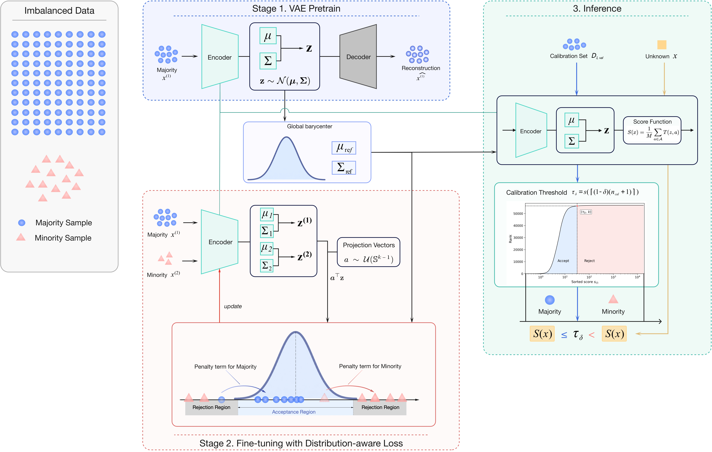
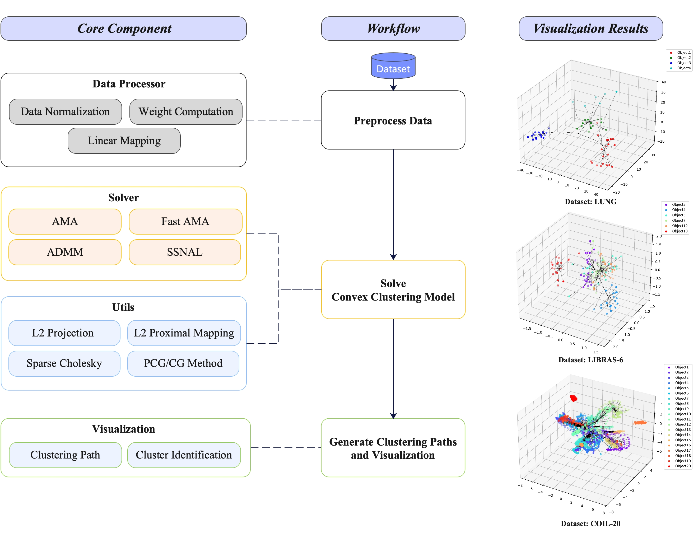

Research Output
Publications
Google ScholarArticles
-

VAE-Inf: A statistically interpretable generative paradigm for imbalanced classification
Under Review arXiv preprint arXiv:2604.25334, 2026
A VAE-based imbalanced classification framework that learns a majority-class reference distribution and enables distribution-free calibrated inference.
Software
-

PyClustrPath: An efficient Python package for generating clustering paths with GPU acceleration
Open-source Package arXiv preprint arXiv:2406.02350, 2025
A Python package with GPU acceleration for convex clustering path generation, designed for reproducible and efficient large-scale experiments.